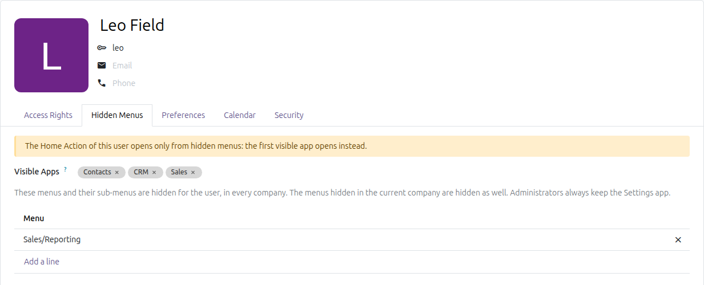
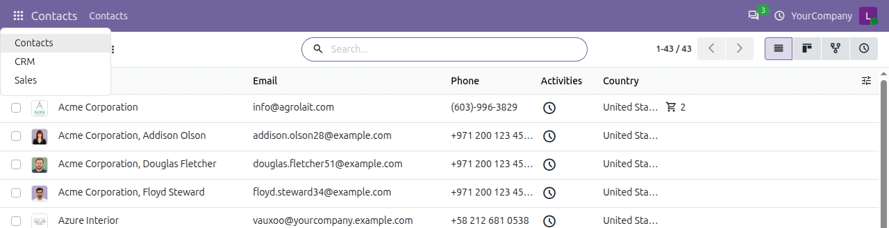
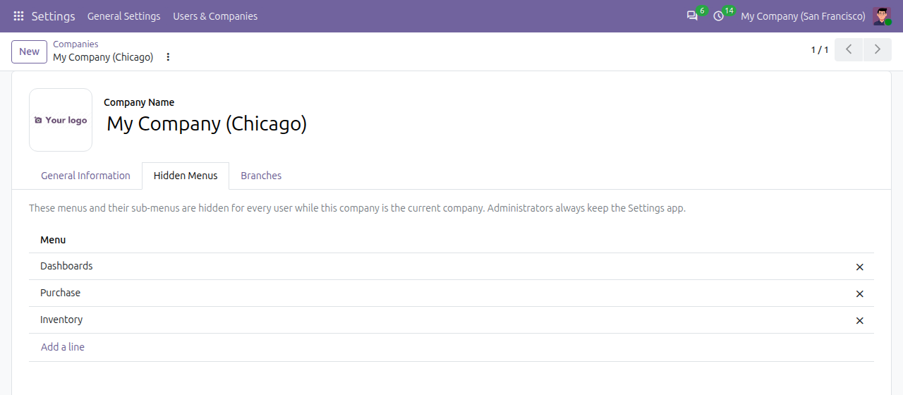
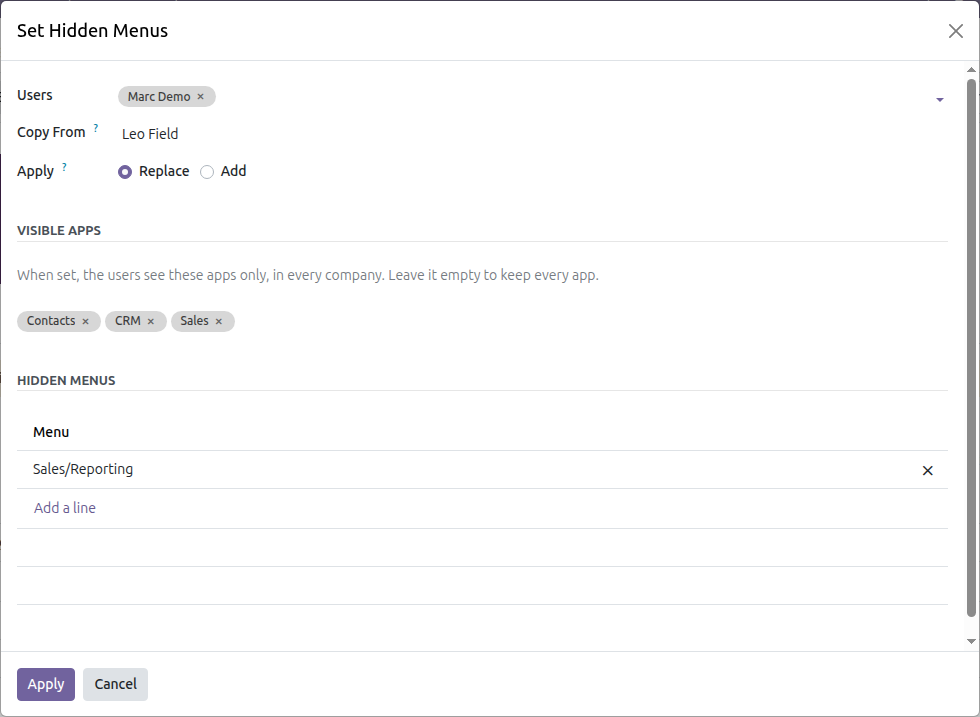
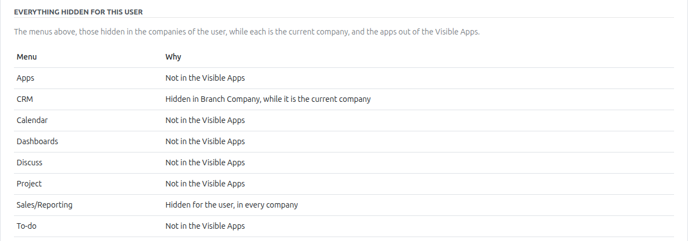
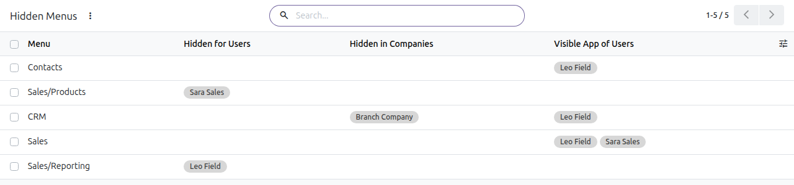

100% Free
Open source · LGPL-3
Odoo 19 Community & Enterprise
Hide Menus by User and Company
Give each user a clean Odoo: hide any app or menu for a user, or for everyone working in a company, or show a user only the apps they work in. Switch company and the menus follow at once.
Per userPer companyVisible apps onlySub-menus includedSeveral users at onceEverything hidden, and whySafe home pageAdministrators keep SettingsNo code

The Hidden Menus tab of a user: the apps they see, the menus hidden inside them, and a warning when their home page is hidden.
Any menu
an app, a menu or a sub-menu
2 ways
per user and per company
0 code
set up in a few clicks
100% free
open source, LGPL-3
Completely free. Your feedback makes it better.
No paid edition, no limits: the code is open (LGPL-3). Every feature is covered by automated tests. Tell us what works, what does not and what you miss.
How it worksPick what each user sees
The rules sit on the user and on the company. Odoo reads them each time the menus load: nothing to log out, nothing to restart.
1
Choose the apps of a user
On the Hidden Menus tab of the user: Visible Apps keeps only Sales, CRM and Contacts; Hidden Menus takes out Sales › Reporting.2
Hide what a company does not use
On the company: the branch without accounting hides Invoicing for everyone working in it.3
Each user sees their part
The apps menu, the menu bar and the home page follow. Switch company in the switcher and the menus of that company show at once.
Use it everywhereA clean Odoo for every role
Users find their way faster when they see only what they work with.
💼
Sales teams
› Only Sales, CRM and Contacts
› No Reporting for the salespeople
› The same menus for the whole team in one go
🏪
Shops and warehouses
› Only Point of Sale or Inventory
› No Configuration menus
› Nothing new when an app is installed
🏢
Several companies
› A branch without Accounting
› The holding sees every app
› The menus follow the company switcher
📊
Accountants
› Invoicing and Accounting only
› Configuration kept for the lead
› Other apps out of the way
🎓
New and temporary users
› Interns, auditors, consultants
› A couple of apps to start with
› Copied from a colleague
⚙️
Administrators
› A tidy menu bar for themselves
› Settings always kept
› Every rule listed in one place
FeaturesEverything to hide, nothing to code
Simple rules on the user and on the company, that work together.
👁️
Any menu
A whole app, a menu of its bar or a single sub-menu. Hiding a menu hides everything under it, and a folder left empty goes too.✅
Visible apps only
List the apps a user keeps: every other app is hidden, also an app installed later. Hidden menus still hide menus inside them.🏢
Per company
Hide menus for everyone while a company is the current one; the menus follow the company switcher at once.👥
Several users at once
From the users list: copy the menus of a user to others, or choose them, replacing theirs or adding to them.🔍
Everything hidden, and why
The user form lists every menu hidden for the user, and the reason: for them, in one of their companies, or out of their apps.🏠
A safe home page
A Home Action in hidden menus is not opened: the first visible app opens instead, and the user form warns about it.🛡️
Administrators keep Settings
The rules apply to them as well, but no rule can hide the Settings app from an administrator.🧭
Full paths, quick search
Menus show their full path, and the pickers find every menu of an app with In App or Menu.
Visible appsShow a user only the apps they work in
Choose the Visible Apps of the user: they see these apps and no other, in every company. When a module is installed, its app stays out of their way. Leave it empty and the user keeps every app, as before.

The apps menu of a user with Contacts, CRM and Sales as Visible Apps.
Per companyHide menus for everyone working in a company
Open the company and add the menus to hide in its Hidden Menus tab. They are hidden for every user while that company is the current one, the first in the company switcher, on top of what is hidden for the user.

The apps of the same user: Dashboards and Inventory are hidden in Chicago.

The Hidden Menus tab of a company.
Several usersSet a whole team at once
Select the users in the users list and use Action, Set Hidden Menus. Copy the visible apps and the hidden menus of another user, or choose them directly, then replace those of the users or add to them. A new colleague gets the menus of the team in a few clicks.

The menus of one user copied to another.
OverviewEvery rule in one place, with the reason
The bottom of the Hidden Menus tab lists everything hidden for the user, and why: no more guessing why someone cannot find a menu. Settings, Users & Companies, Hidden Menus lists every hidden menu with its users, companies and visible apps; the Hidden For tab of a menu shows the same rules from its side.

Everything hidden for a user: for them, in a company, or out of their visible apps.

Every hidden menu, with its users, companies and visible apps.
WhyFrom a crowded menu to a clear one
What changes the day it is installed.
| Without it | With Hide Menus |
|---|
| A new app is installed | ✗ It shows up for everyone | ✓ Out of sight for the users with Visible Apps |
| Branches | ✗ The same menus in every company | ✓ Each company hides what it does not use |
| A new colleague | ✗ Set up menu by menu | ✓ Copied from a teammate in one go |
| "I cannot find it" | ✗ Search through the settings | ✓ One list on the user, with the reason |
| A home page in a hidden app | ✗ Opens anyway | ✓ The first visible app opens, with a warning |
How to use it
1. Open a user in Settings, Users & Companies, Users, and go to the Hidden Menus tab.
2. Choose their Visible Apps, or leave it empty to keep every app, and add the menus to hide.
3. To hide menus in a company, do the same in the Hidden Menus tab of the company.
4. To set several users, select them in the users list and use Action, Set Hidden Menus. The users see the change on their next page load.
Good to know
✓ Hiding a menu is not an access right: a user who knows the address of a page can still open it. Use the groups and record rules of Odoo to forbid the data itself.
✓ Only the administrators see and change the hidden menus.
✓ With several companies active, the rules of the current company apply, the first one in the company switcher, with those of the user. The app switcher of the website follows too.
✓ It only depends on the base and web modules: it works on Odoo 19 Community and Enterprise alike.

Keeping it simple